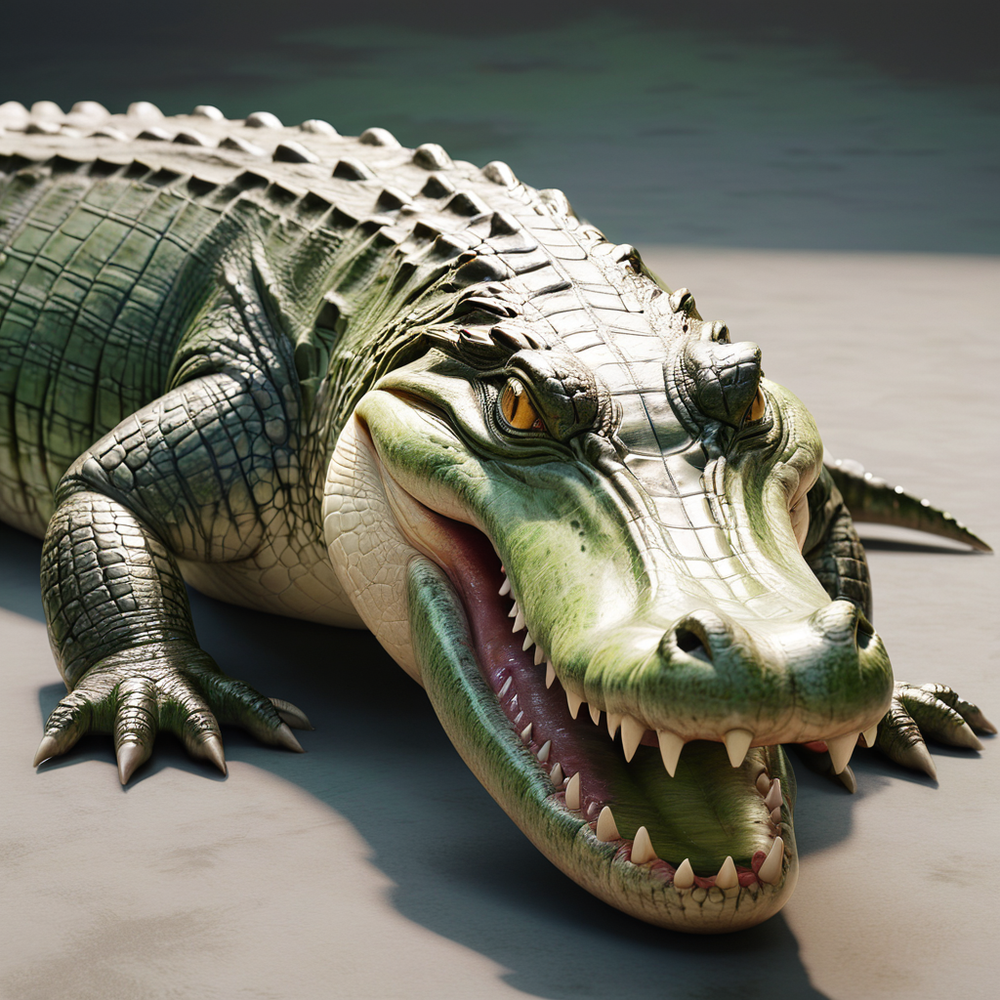
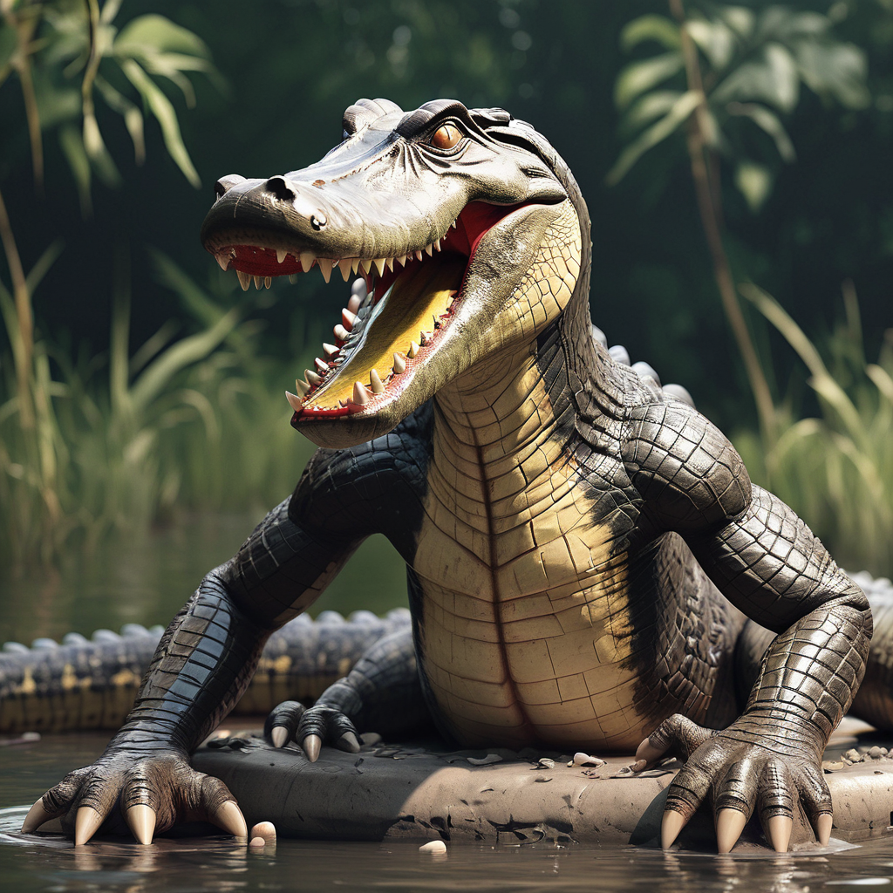

Das faszinierende Krokodil
Unser Zoo ist stolz darauf, das majestätische Krokodil zu präsentieren. Diese furchteinflößenden Reptilien faszinieren Besucher mit ihrer Kraft und ihrem einzigartigen Aussehen. Als Bewohner der tropischen Gewässer sind Krokodile ein Symbol für Stärke und Überlebensfähigkeit.
Ein Blick in die Vergangenheit: Das urzeitliche Krokodil
Entdecken Sie das geheimnisvolle urzeitliche Krokodil, eine faszinierende Kreatur aus längst vergangenen Zeiten. Diese beeindruckenden Reptilien sind ein Beweis für die Ausdauer der Evolution und bieten Einblicke in die Vergangenheit unseres Planeten. Ihre Existenz über Millionen von Jahren hinweg öffnet Türen zu den unerforschten Geheimnissen der Geschichte.
Mehr über Krokodile
Krokodile sind faszinierende Reptilien, die zur Familie der Krokodile gehören. Sie sind in den tropischen und subtropischen Regionen der Welt beheimatet und zeichnen sich durch ihre ausgezeichnete Jagdtechnik und ihre bemerkenswerte Anpassungsfähigkeit aus. Krokodile sind wichtige Räuber in ihren Lebensräumen und spielen eine entscheidende Rolle im Ökosystem der Flüsse, Seen und Sümpfe, in denen sie leben. Trotz ihrer scheinbaren Stärke sind Krokodile durch Lebensraumverlust, Wilderei und menschliche Konflikte gefährdet.